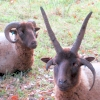

Lé don d'eune bèrgéthie à La Société Jersiaise par Moussieu P. J, L. L'Mâsuthi (Le Masurier) d'La Pointe, Vînchelez, en est iun des pus génétheurs, et d'autant pus apprécyi à cause dé sa grand' valeu historique, partitchuliéthement dépis qu' nou pense qué ch'est la toute dreine tch'existe dans l'Île à ch't heu. Située à l'entrée du Grand Clios, mais joignant à la propriété Le Ménage ès Feuvres dans La Rue des Landes et dans la Tchilliette dé Vînchelez, ch'est un p'tit enclios à pièrre secque, un trais-carres dé mains d'eune pèrque et d'mie, dans tchi qu' nou-s-attroupait ou cachait les brébis dé d'dans l'grand clios dêjà mentionné pouor en faithe la sélection, les touôser, et cétéra, et ch'la dans nouot' Jèrri tout à fait difféthent du chein qué j'connaîssons au jour d'aniet. Chu p'tit enclios a 'té appelé aut'fais étout Lé Bigard. Et nou connaît chu mot - bigard, bigachon, bicachon ou picachon - partout Jèrri pouor un p'tit betchet d'tèrre en trian.
Ches bèrgéthies, un temps fut, sé trouvaient partout l'Île, mais l'auteur dé ch't' articl'ye peut dithe qué pouor pus d'vîngt-chînq ans (dé 1930 à 1956), ayant 'té dans probabliément touos les clios en Jèrri sus lé d'ver d'sa chèrge à cause dé san travas, janmais n'rencontrit un patheil enclios ailleurs. I' y'a cèrtains clios ichîn et là connus acouo par tel nom, et tchiques propriêtés, dans châque cas êvidemment d'après eune bèrgéthie d'aut'fais, mais i' n'y'en reste dgéthe comme chette-chîn à St. Ou. Nou s'rappelle tout à fait bein des anciens du vaîthinné, à ch't heu tous hors, tchi pâlaient d'la bèrgéthie comme eune èrlique du temps pâssé. Ayant apparténu à la m'mèe au Sieur Lé Mâsuthi et à san péthe dévant lyi, lé défunt Douard Lé Boutilyi (Le Boutillier), oulle avait d'vant ch'la 'té dans les mains dé plusieurs membres dé la fanmil'ye Lé Cornu, lé preunmyi étant Charles Philippe Lé Cornu, tchi l'avait prînse d'un Samuel Hamon fis Jean dans l'année 1840. Moussieu George F. Le Feuvre, du Ménage ès Feuvres, a tréjous comprîns qué l'Grand Clios et la bèrgéthie, atout eune aut' chînquantaine dé vrégies d'tèrre là l'tou, étaient un temps fut la propriêté dé ses anchêtres, formant partie dudit Mênage.
N'est pon bésoin dé grand înmaginnâtion pouor sé fidguther l'temps pâssé à ch't êgard, Lé gentiment grand clios étant peu par un troupé d'conséquenche dé brébis, atout sa bèrgéthie tout près et y joignant, et toutes les activités concèrnant la laine dé ches vièrs jours-là; la grand' quantité d'oeuvre, sustout du corset d'oeuvre, tchi, pus tard, dévînt hardi bein connu pouor export comme le "jersey"; la vie des gens d'la campangne sus quâsi touos les sens si difféthente dé la cheinne qué j'connaîssons d'nouos jours. Les brébis fûdrent dé grande împortance dans l'êconomie d'l'Île dépis lé Moyen Age jusqu'au 18e, siècl'ye. I' faut dithe étout, point d'veue historique, qué les brébis natives d'aut'fais étaient partitchuliéthes à Jèrri et r'mèrquabl'ye à cause tch'il' avaient quatre (et siex) cornes.
Un cèrtain en donnait eune description dans l'an 1584 et dîthait tch'il' 'taient dév'nues bein rares, et l'historien Jean Podêtre êcrivant en 1682, dîthait qué "un temps fut, les feunmelles avaient l'pus souvent quat' cornes et les moutons souvent six".
Y'a des pâraisses tchi possèdent acouo des registres datant dé ches temps-là quand les difféthents troupieaux avaient l's ouothelles êbutées, pèrchies, et cétéra, pouor connaître lus propriêtaithes. Cèrtains registres, par exempl'ye, en date dé 1716 et auprès donnent dé l'înformâtion hardi întérêssante au sujet des "mèrques" pouor châtchun des fèrmièrs, tous atout d'bouons vièrs noms et bein connus dans la pâraisse mais à ch't heu pouor la pliûpart péthinmés - d'Auvergne, Lé Montais, d'la Perrelle, L'Escaudé, Gabouothé (Gabourel), Dumathés (Dumaresq), Barbyi (Barbier), Sprague, Mahaut, Tocque, Ricard, d'la Place, Briard, Prouîngs. Un registre pouor la pâraisse dé Ste. Mathie daté 1748, des vîngtaines du Nord et du Sud, est hardi comme les cheins d'St. Ou et êvidemment étant dèrché eune copie d'un pus vyi. La manniéthe dé mèrtchi l's ouothelles des brébis dé châque troupé 'tait d'êbuter, fendre, faithe eune ôque, pèrchi, coper, et cétéra, ou enlever eune partie d'eune ouothelle, toute jeune ou les deux. La "mèrquéthie" tchi n'pouvait sinon, lé pus souvent, êt' faite cruellement est souongneûthement dêcrite dans ches registres, et ch'est quâsi încriyabl'ye mais, en changeant, n'y'en a janmais deux tch'étaient justément la même chose, la "populâtion" dé brébis étant pouortant dans les trais chents troupieaux dans les siex tchilliettes dé la pâraisse. (Nou dit des vîngtaines dans toutes les aut's pâraisses.) Quand même, i' d'vait faller êt' bein r'gardant pouor pouver identifier les "mèrques ".
Ches registres, tchi sont extrêmement intérêssants, sont appelés Les Registres des Merches du Berquail de la Parroisse de St. Ouën (sic). Nou donn'na rein qu' deux'trais extraits dé ieune des tchilliettes à la fîn dé ch't' articl'ye.
Lé mot Jèrrais bèrcas (V. Fr. berquail) 'tait fait sèrvi pouor des brébis en général, et du bèrcas d'falaise sé dîthait pouor chein tchi paîssait sus les côtes ou falaises du Nord et du Ouêst d'l'Île, étant pouor chutte raison dé qualité înféthieuse. Et, "par extension ", nou dit ch'la étout acouo d'nouos jours, sans compliaîthance bein seux, dé gens tchi sont considéthés avait 'té mal êlevés, des gens grôssièrs ou sans manniéthes. Ché s'sait p't-êt' d'întéthêt dé donner tchiques aut's mots tch'étaient aut'fais en usage et bein connus par tout l'monde mais qué rein qu' cèrtains anciens né connaîssent à ch't heu. À part brébis et mouton, lé p'tit est l'angné, eune janne brébis d'l'année eune gèrche. Nou dit tondre ou touôser, et un troupé ou fliotchet. Y'avait un rouet pouor filer. Nou dit ouvrer, et ch'la ch'est d'l'oeuvre. Mais ou pouvez trouver tout ch'la dans l'Dictionnaire Jersiais-Français, aussi bein comme banon, bèrger, laine (laine en sîn), fi et trême.
La laine tondue ch'tait d'la laine en sîn, et nou la lavait et la filait ichîn, mais contre la fin du 19e. siècl'ye quand, dé pus en pus, i' restait bein mains d'brébis, i' d'vînt eune couôteunme pouor cèrtaines gens à crouaîthi en Nouormandie pouor faithe faithe chenna. Eh bein, nou pense qué des membres dé la fanmil'ye Lé Feuvre, des Landes dé Gros Nez, fûdrent parmi les dreins à y'aller, lus p'tit troupé étant iun des deux'trais tchi restaient. La femme dé l'auteur dé ch't' articl'ye, dé tchi la méthe défunte était eune Lé Feuvre, a acouo eune bouôlaine dé fi dé des toutes dreines brébis, et étout un rouoge châle ouvré, ch'tî-chîn ayant 'té teint en Jèrri, et pis eune cravate ouvrée blianchâtre.
Tchiques brébis ont 'té ranm'nées dans l'Île les autres années. Mais, où'est don tch'est chu temps-là, chu temps jadis quand i' d'vait y'en aver des mille et des mille partout Jèrri?
Deux'trais extraits du registre dé ieune des tchilliettes dé St. Ou pouor 1716
(Ches registres sans doute sont en vièr français mais atout hardi d'mots connus seulement dans la langue Jèrriaise, et l's extraits sont donnés exactément comme nou l's y trouve)
 |
 |
 |
 |
{kind=link}